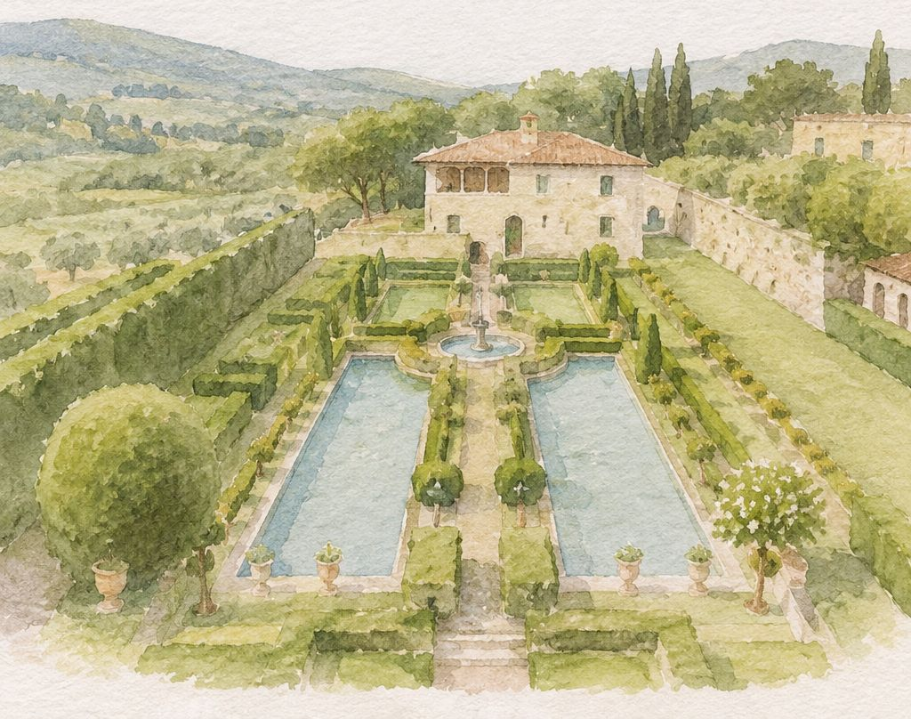
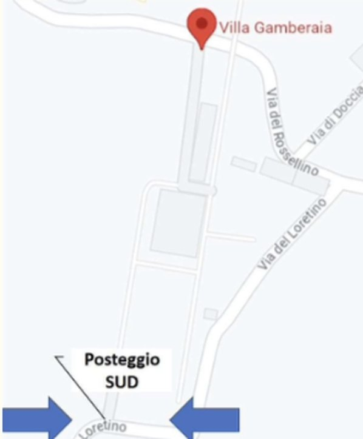

Sexta, 30 de abril
Welcome party
Uma festa para darmos as boas-vindas a quem veio de longe e começarmos as comemorações juntos.
Com carinho,
Toque para abrir o convite
Vamos nos casar
30 de abril a 2 de maio
2027
Villa Gamberaia
Settignano, Florença · Toscana, Itália

Faltam
Mal podemos esperar
Queridos familiares e amigos,
Vocês fazem parte da nossa história, e ter cada um de vocês por perto torna este momento ainda mais especial.
Neste site, reunimos as informações necessárias, além de algumas dicas para ajudar na programação da viagem.
Esperamos por cada um de vocês para comemorarmos juntos e aproveitarmos ao máximo esses dias incríveis!
Carol & Léo
O fim de semana
Três dias de celebração, todos na Villa Gamberaia, nas colinas de Settignano.
Sexta, 30 de abril
Uma festa para darmos as boas-vindas a quem veio de longe e começarmos as comemorações juntos.
Sábado, 1º de maio
O grande dia: a cerimônia nos jardins e, em seguida, a festa até tarde.
Domingo, 2 de maio
Uma manhã sem pressa para nos despedirmos e relembrarmos a noite anterior.
Sábado, 1º de maio, nos jardins da Villa Gamberaia
O que vestir
Um guia para cada momento. Na dúvida, fale com a gente.
Cocktail chic
O traje que pensamos é cocktail chic, todo em tons de branco, off-white ou marfim.
MulheresVestido curto, midi ou longo, com estilo mais leve.
HomensCamisa social ou polo, com calça de alfaiataria ou chino. Blazer opcional.
Passeio completo
MulheresVestido longo.
HomensTerno escuro e gravata.
Por gentileza, evite branco, marfim e tons de champanhe claro.
A cerimônia é nos jardins, com caminhos de cascalho: saltos mais grossos são bem-vindos.
Casual
Leve e confortável, para um domingo de primavera na Toscana.
MulheresVestido leve ou calça de linho, com sandália baixa.
HomensPolo ou camisa de linho, com calça chino.
É primavera! Pense em dias agradáveis, entre 20 e 23 °C, e noites mais fresquinhas, por volta de 11 a 13 °C. Costuma fazer sol, com uma ou outra pancada rápida de chuva. O sol se põe por volta das 20h, e a noite esfria nas colinas de Settignano: vale levar um blazer, uma pashmina ou um casaquinho leve para a noite.
A villa
Via del Rossellino, 72
50135 Settignano, Florença, Itália
Nas colinas a leste de Florença, a cerca de 8 km do centro histórico.
Abrir no mapa| Florença (FLR) O mais próximo e o mais prático | ~30 min de carro |
| Pisa (PSA) Trem ou carro até Florença | ~97 km |
| Bolonha (BLQ) Trem rápido até Florença | ~117 km |
| Roma (FCO, Fiumicino) Mais voos internacionais; trem rápido até Florença | ~300 km |
Deslize para ver o mapa inteiro ou toque para ampliar

Para convidados, o estacionamento é o Posteggio Sud, com entrada pela Via del Loretino, a cerca de 180 metros da entrada sul da Villa.
Importante: chegue à Via del Loretino pelo Lungarno Aldo Moro, e não por Settignano. As ruas em volta de Settignano são estreitas, entre muros, e difíceis para manobrar. Por isso, recomendamos ir de táxi.
Abrir o estacionamento no mapaOnde ficar
Estamos preparando sugestões de hotéis em Florença e em Settignano. Em breve, por aqui.
Maio é alta temporada na Toscana, então vale garantir passagens e hospedagem com antecedência.
Para aproveitar
Estamos reunindo indicações de maquiadores e cabeleireiros em Florença para quem quiser contratar. Em breve, por aqui.
Abril e maio são alta temporada de casamentos na Toscana, e as agendas lotam rápido.
Pergunte se o profissional atende no seu hotel e se cobra deslocamento.
Fotos do penteado e da maquiagem que você imagina ajudam muito, ainda mais se houver diferença de idioma.
Penteados soltos sofrem com vento e umidade nos jardins. Vale levar grampos e um spray fixador na bolsa.
Duomo — a catedral e a cúpula de Brunelleschi; reserve a subida
Galleria degli Uffizi — Botticelli, Leonardo e a grande coleção do Renascimento
Galleria dell'Accademia — para ver o Davi de Michelangelo
Ponte Vecchio — a ponte das joalherias sobre o rio Arno
Jardim de Boboli — os jardins do Palazzo Pitti, do outro lado do rio
Piazzale Michelangelo — a vista mais famosa da cidade, perfeita ao pôr do sol
Settignano é um vilarejo tranquilo nas colinas, ótimo para um café antes dos eventos.
Logo ao lado fica Fiesole, com uma das vistas mais bonitas de Florença e um teatro romano.
Vinícolas do Chianti, Siena, San Gimignano, Lucca e Pisa são bate-voltas clássicos a partir de Florença, de carro ou de trem.
Compre os ingressos dos museus mais disputados com antecedência. Muitos museus estatais fecham às segundas-feiras.
O centro tem áreas de trânsito restrito. Antes de entrar de carro, confirme com seu hotel ou estacionamento as regras e o trajeto permitido.
1º de maio é feriado na Itália. Lojas, serviços e transporte podem funcionar em horário reduzido nesse dia.
Fim de abril tem dias amenos e noites ainda frescas: leve um casaco leve ou uma pashmina. Tomadas italianas são tipo F e L, 230 V: as fichas portuguesas costumam servir na maioria delas, e quem vem do Brasil precisa de adaptador.
A Itália está 5 horas à frente de Brasília e 1 hora à frente de Lisboa nessa época. A moeda é o euro, e muitos restaurantes cobram o coperto, uma taxa fixa por pessoa.
Il Santo Bevitore — cozinha toscana contemporânea em Santo Spirito
Trattoria Cammillo — clássico do Oltrarno desde 1945
Del Fagioli — trattoria de família perto de Santa Croce
4 Leoni — pratos florentinos numa praça charmosa do Oltrarno
Zeb — balcão pequeno e aconchegante em San Niccolò
Trattoria Mario — almoço florentino raiz perto do Mercado Central (só abre no almoço)
La Sosta del Rossellino — na mesma rua da Villa, em Settignano
La Reggia degli Etruschi — terraço com vista para Florença, em Fiesole
Caffè Gilli — o café mais antigo da cidade, aberto em 1733, na Piazza della Repubblica
Rivoire — chocolate quente famoso, de frente para o Palazzo Vecchio
Procacci — os clássicos panini de trufa na Via de' Tornabuoni
Vivoli — uma das gelaterias mais tradicionais, desde 1929, perto de Santa Croce
Perché No! — desde 1939, entre a Piazza della Signoria e a Repubblica
Gelateria della Passera — pequena e premiada, no Oltrarno
Gelateria dei Neri — sabores criativos perto de Santa Croce
Na primavera, os restaurantes mais procurados lotam: vale reservar com antecedência.
Confirme sua
Queremos muito celebrar com você. Conte pra gente quem vem e em quais momentos vai estar.
Quase lá! Toque no botão abaixo para enviar sua confirmação pelo WhatsApp.
O prazo para confirmar presença terminou em 15 de janeiro de 2027. Se ainda precisar falar com a gente, mande uma mensagem direto para os noivos.
Uma nota sobre
Sua presença, ainda mais vindo de tão longe, já é o nosso maior presente. Entretanto, para quem desejar nos presentear, escolhemos com carinho algumas peças na Tânia Bulhões e cotas simbólicas para a nossa nova vida juntos.
Carol & Léo
Lista na loja
Escolhemos algumas peças especiais para a nossa casa. É só escolher e comprar direto no site da loja.
Ver nossa listaO link da lista entra em breve.
Ou presenteie com
Qualquer quantia vira uma lembrança da nossa nova vida juntos.
Convidados fora do Brasil
Perguntas
Até 15 de janeiro de 2027, pelo formulário da seção RSVP. É rapidinho: você marca em quais eventos vai e inclui as pessoas da sua família que foram convidadas.
Não. Vamos amar ter você em todos, mas fique à vontade para escolher. No RSVP, marque só os eventos em que você vai estar.
Pedimos que venham apenas as pessoas convidadas. Se tiver alguma dúvida, fale com a gente.
Vindo do Brasil: para turismo de até 90 dias, brasileiros não precisam de visto. O passaporte deve ter validade de pelo menos três meses depois da data de saída da Europa.
A União Europeia está implantando o ETIAS, uma autorização eletrônica feita online antes da viagem. Confira se ele já é exigido no site oficial antes de embarcar.
Vindo de Portugal: como cidadãos da União Europeia, não precisam de visto nem de ETIAS. Basta o Cartão de Cidadão ou o passaporte válidos.
Vindo do Brasil: recomendamos muito. Um seguro com cobertura médica na Europa evita sustos e costuma custar pouco perto do valor da viagem.
Vindo de Portugal: leve o Cartão Europeu de Seguro de Doença, que dá acesso ao atendimento público na Itália. Um seguro de viagem complementar também é bem-vindo.
O de Florença (FLR) é o mais próximo, a cerca de 30 minutos da Villa. Pisa, Bolonha e Roma (Fiumicino) também são opções, com trem rápido até Florença. Do Brasil, Roma costuma ter mais voos diretos. De Portugal, vale comparar voos para Florença, Pisa, Bolonha e Roma. Veja mais em Como chegar.
Welcome party: cocktail chic, todo em tons de branco. Cerimônia e festa: passeio completo, com vestido longo para elas (por gentileza, evite branco, marfim e champanhe claro). Brunch: casual. Os detalhes estão em Dress code.
Estamos preparando sugestões de hotéis em Florença e Settignano, que vão aparecer em Hospedagem. Como maio é alta temporada, vale reservar com antecedência.
Temos uma lista na Tânia Bulhões, com compra direto no site da loja, e cotas no PIX: escolha uma em Presentes e toque em Presentear para ver o QR code e o PIX copia e cola com o valor já preenchido. Também dá para mandar um PIX com o valor que você quiser. Para convidados fora do Brasil, há também a opção de transferência em euros.